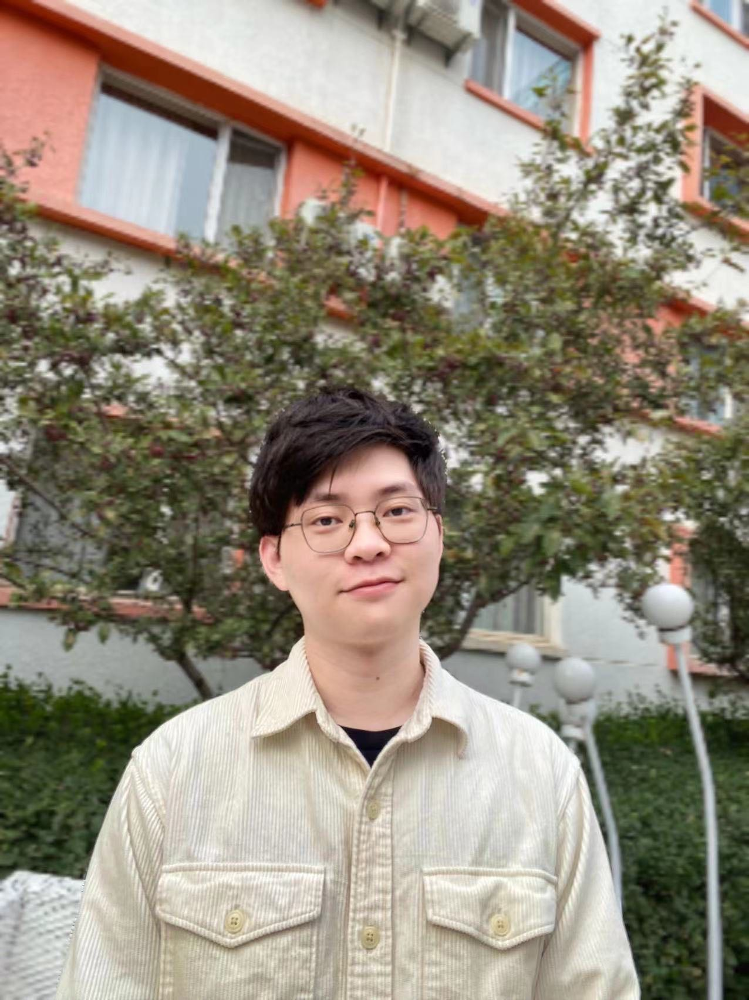
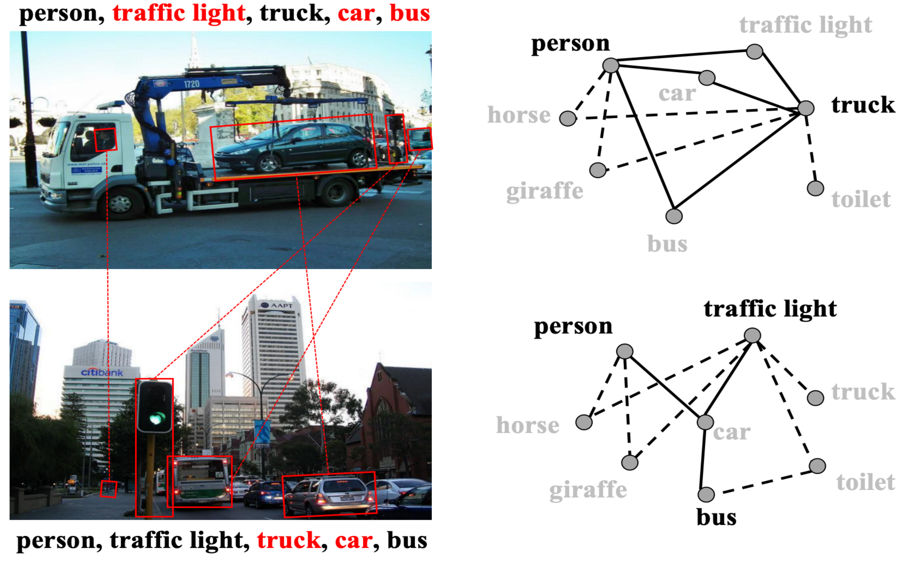
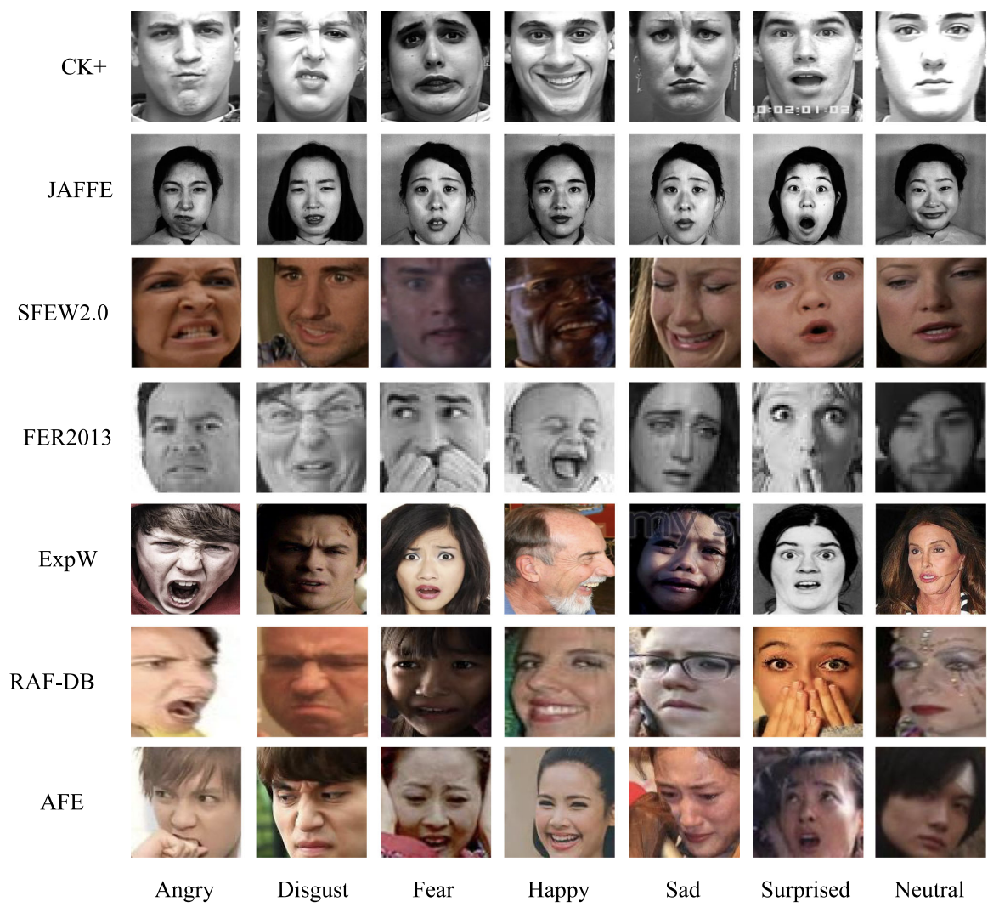

|
Tao PU (蒲韬)
I am currently a Ph.D. student from the School of Computer Science and Engineering at Sun Yat-sen University. I am grateful to join the HCP Lab and be advised by Prof. Liang Lin. Before that, I received my Bachelor’s Degree from Sun Yat-sen University in 2020.
I’m broadly interested in visual understanding. The goal of my research is to build general-purpose agents that can abstract the environment from a human-oriented perspective and have versatile motor skills in challenging scenarios.
Email |
CV |
GitHub |
Google Scholar |
LinkedIn
|

|
|
News
---- show more ----
|
Selected Publications
Please see this page for more recent works and arXiv papers.
* denotes equal contribution, † denotes corresponding author.
|
|
|
Spatial–Temporal Knowledge-Embedded Transformer for Video Scene Graph Generation
Tao Pu*, Tianshui Chen* ✉, Hefeng Wu, Yongyi Lu, Liang Lin
IEEE Transactions on Image Processing (TIP), 2024
Paper |
Code |
Cite
TL;DR: A video scene graph generation approach that incorporates the prior spatial-temporal knowledge to learn better representations.
|
|

|
Heterogeneous Semantic Transfer for Multi-label Recognition with Partial Labels
Tianshui Chen* ✉, Tao Pu*, Lingbo Liu, Yukai Shi, Zhijing Yang, Liang Lin
International Journal of Computer Vision (IJCV), 2024
Paper |
Code |
Cite |
知乎
TL;DR: A weakly-supervised MLR approach that explores heterogeneous semantics inherently within multi-label images.
|
|

|
Cross-Domain Facial Expression Recognition: A Unified Evaluation Benchmark and Adversarial Graph Learning
Tianshui Chen*, Tao Pu*, Hefeng Wu ✉, Yuan Xie, Lingbo Liu, Liang Lin
IEEE Transactions on Pattern Analysis and Machine Intelligence (TPAMI), 2022
Paper |
Code |
Cite |
知乎
TL;DR: One of the largest CD-FER evaluation benchmarks that unifies the source/target datasets and feature extractors for existing algorithms.
|
Honors & Awards
- 中国科协青年人才托举工程博士生专项计划, 2024
- Graduate National Scholarship (博士研究生国家奖学金), 2024
- Undergraduate National Scholarship (本科生国家奖学金), 2018
---- show more ----
- 广东省计算机学会优秀论文一等奖, 2024
- 粤港澳优秀研究生论文大赛三等奖, 2024
|
Academic Services
- Conference Reviewer: CVPR, ICLR, NeurIPS, ICML, IJCAI, ACM MM, AAAI
- Journal Reviewer: TPAMI, TNNLS, TKDE, TOMM
|
|